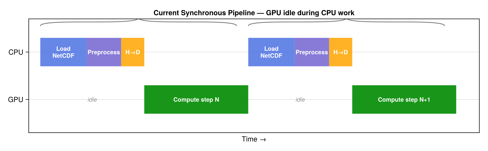
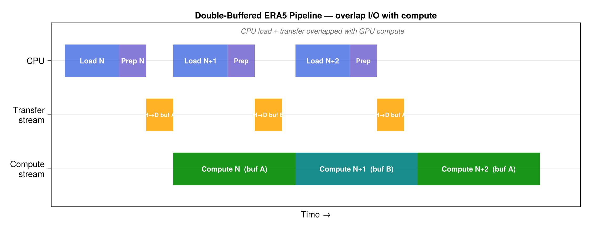
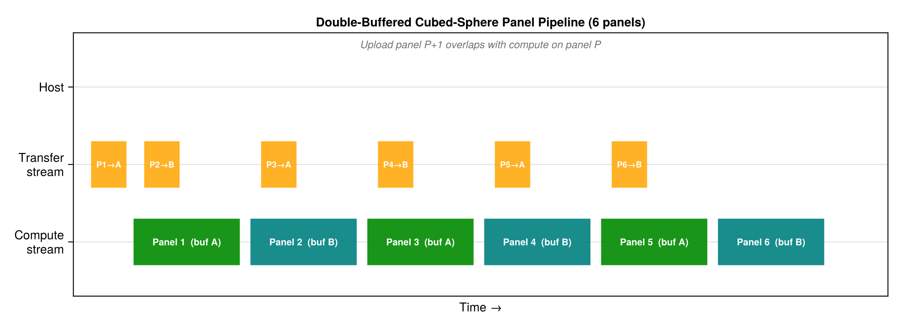

GPU Double Buffering (Ping-Pong Strategy)
This page describes a key GPU optimization for overlapping data transfer with computation. The technique applies to both the ERA5 timestep pipeline and the cubed-sphere panel pipeline, and can roughly double GPU utilization when I/O transfer time is comparable to compute time.
The Problem: Synchronous Pipeline
In the current forward simulation loop (see scripts/run_forward_hybrid.jl), every timestep follows a strictly sequential pattern:
for step in 1:Nt
# --- CPU work (GPU idle) ---
u, v, ω, Δp, ps = load_timestep(datafile, step, ...) # NetCDF read
met = stagger_winds!(u, v, ω, ...) # CPU compute
_build_Δz_3d!(Δp_cpu, grid, ps) # CPU compute
copyto!(Δp_dev, Δp_cpu) # H→D transfer
copyto!(u_dev, met.u) # H→D transfer
copyto!(v_dev, met.v) # H→D transfer
# --- GPU work ---
compute_air_mass!(m_dev, Δp_dev, gc)
compute_mass_fluxes!(am_dev, bm_dev, cm_dev, ...)
strang_split_massflux!(tracers, m_dev, am_dev, bm_dev, cm_dev, ...)
endThe GPU sits idle during ~6 sequential CPU operations (disk read, velocity staggering, pressure thickness computation, and three copyto! transfers) before it gets any work:

The idle fraction grows as the computation becomes faster (e.g., with Float32, fewer vertical levels, or a smaller grid), making data movement the bottleneck.
Solution: Double-Buffered Ping-Pong
The idea is simple: pre-allocate two sets of GPU buffers (A and B) and use two CUDA streams (one for compute, one for async data transfer) so that loading the next timestep overlaps with processing the current one.
The pipeline becomes:
- Upload timestep N to buffer A (blocking, first iteration only)
- Launch compute on buffer A (compute stream)
- While GPU computes on A, CPU loads and preprocesses timestep N+1, then async-copies it to buffer B (transfer stream)
- Wait for both streams; swap A ↔ B; repeat

Implementation Sketch
using CUDA
# Pre-allocate two buffer slots
buf = ntuple(_ -> (
Δp = CuArray{FT}(undef, Nx, Ny, Nz),
u = CuArray{FT}(undef, Nx+1, Ny, Nz),
v = CuArray{FT}(undef, Nx, Ny+1, Nz),
), 2)
compute_stream = CuStream()
transfer_stream = CuStream()
# Initial load into buffer 1
upload!(buf[1], load_and_preprocess(1), transfer_stream)
CUDA.synchronize(transfer_stream)
curr, next = 1, 2
for step in 1:Nt
# Launch compute on current buffer (compute stream)
@cuda stream=compute_stream compute_step!(tracers, buf[curr]...)
if step < Nt
# Overlap: CPU loads next step, then async-upload to `next` buffer
cpu_data = load_and_preprocess(step + 1) # CPU work
upload!(buf[next], cpu_data, transfer_stream) # async H→D
end
CUDA.synchronize(compute_stream)
CUDA.synchronize(transfer_stream)
curr, next = next, curr # swap buffers
endThe key CUDA.jl primitives are:
CuStream()— create an independent execution streamcopyto!(dst, src; stream=s)— async copy on streams@cuda stream=s kernel!(...)— launch kernel on streamsCUDA.synchronize(s)— block until streamscompletes
With KernelAbstractions.jl, use synchronize(backend) after each kernel group, scoped to the appropriate stream.
Application 1: ERA5 Timestep Pipeline
For the ERA5 mass-flux advection run, each timestep loads three 3D arrays (Δp, u, v) from disk. At 1° × 1° × 137 levels in Float32, this is roughly:
| Array | Shape | Size |
|---|---|---|
| Δp | 360 × 180 × 137 | ~34 MB |
| u | 361 × 180 × 137 | ~34 MB |
| v | 360 × 181 × 137 | ~34 MB |
| Total per step | ~100 MB |
On PCIe Gen4 x16 (~25 GB/s), transfer takes ~4 ms. On PCIe Gen3, ~8 ms. If GPU compute per step is 20-50 ms, the overlap saves 4-8 ms per step (10-40% of total step time). Over thousands of steps, this adds up.
The double-buffer option would be exposed as:
ws = allocate_massflux_workspace(m, am, bm, cm; double_buffer=true)Application 2: Cubed-Sphere Panel Pipeline
For the cubed-sphere grid, the model processes 6 panels sequentially. Each panel's data (MFXC, MFYC, DELP, tracer) must be on the GPU before advection kernels can run. With double buffering, while the GPU advects panel P on buffer A, we upload panel P+1's data to buffer B:

This is particularly effective because:
- Each C720 panel is 720 × 720 × 72 — substantial transfer volume (~280 MB in Float32)
- The 6-panel sequential loop provides a natural pipeline with clear chunk boundaries
- Panel computations are independent (modulo halos, which are small)
The same curr/next buffer-swapping pattern applies, with the loop iterating over panels 1–6 instead of timesteps.
Expected Speedup
The theoretical speedup from double buffering is:
Speedup = T_sequential / T_overlapped
= (T_cpu + T_transfer + T_compute) / max(T_compute, T_cpu + T_transfer)| Regime | T_compute vs T_transfer | Speedup |
|---|---|---|
| Compute-bound | T_compute >> T_transfer | ~1× (no benefit) |
| Balanced | T_compute ≈ T_transfer | ~2× |
| Transfer-bound | T_compute << T_transfer | ~1× (limited by transfer) |
The sweet spot is when compute and transfer times are comparable, which is often the case for moderate-resolution grids on consumer GPUs. For very large grids (C720), the compute time dominates and the benefit is smaller per step but the absolute time saved is still significant over many steps.
Configuration
The double-buffer strategy is an optional optimization controlled by a flag. When disabled, the model uses the simpler synchronous pipeline (easier to debug, deterministic timing). When enabled, the model pre-allocates 2× the met-data GPU memory in exchange for overlapped execution.
# Synchronous (default, simpler)
ws = allocate_massflux_workspace(m, am, bm, cm)
# Double-buffered (faster when I/O is significant)
ws = allocate_massflux_workspace(m, am, bm, cm; double_buffer=true)